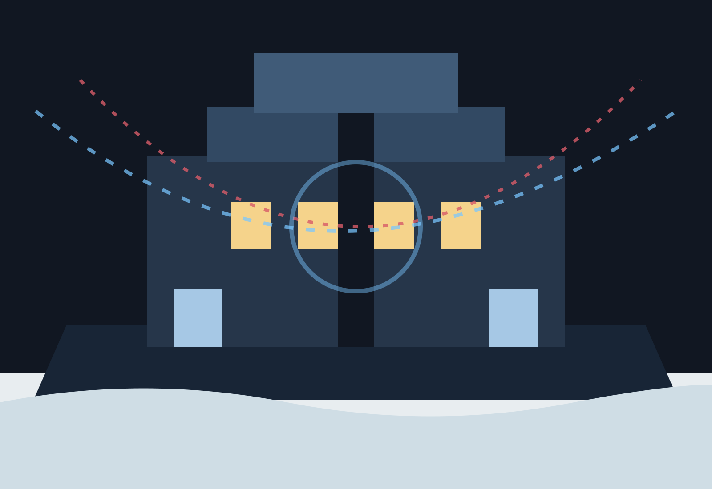
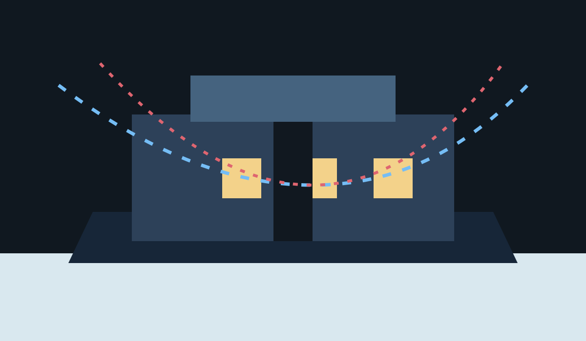
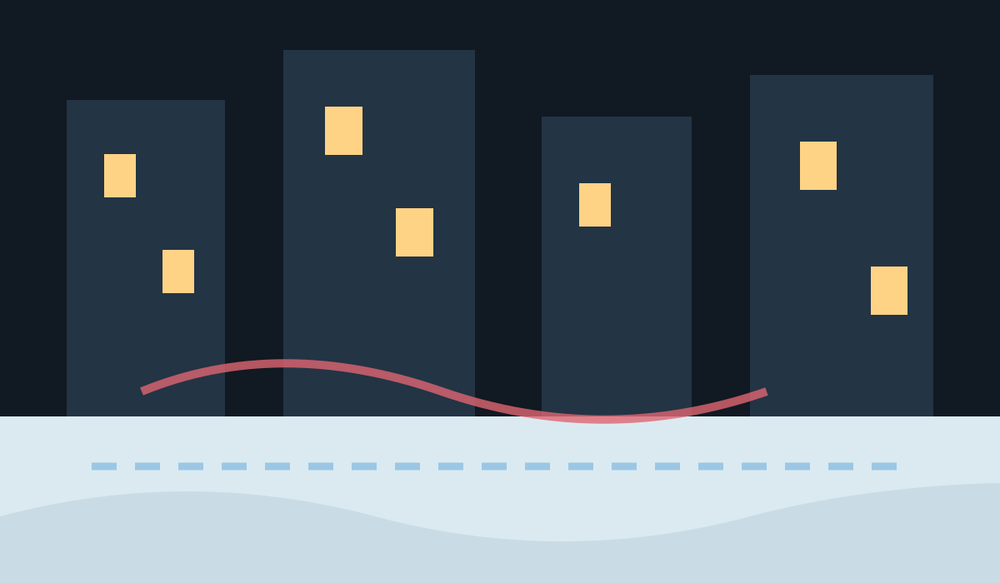
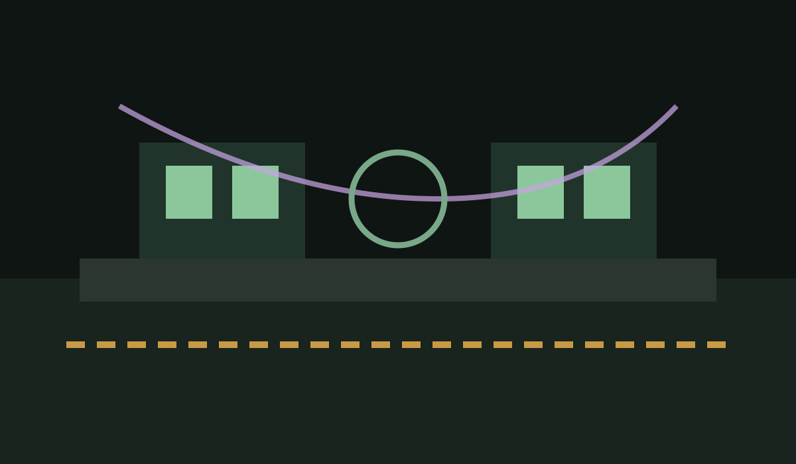
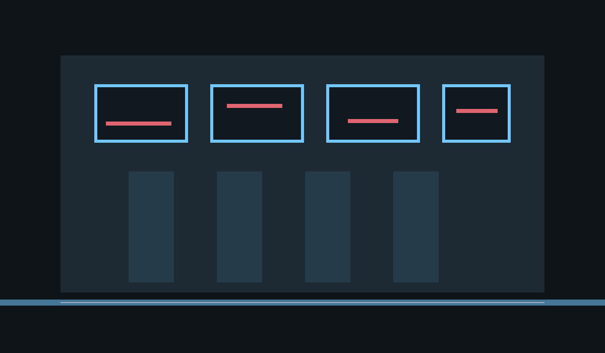
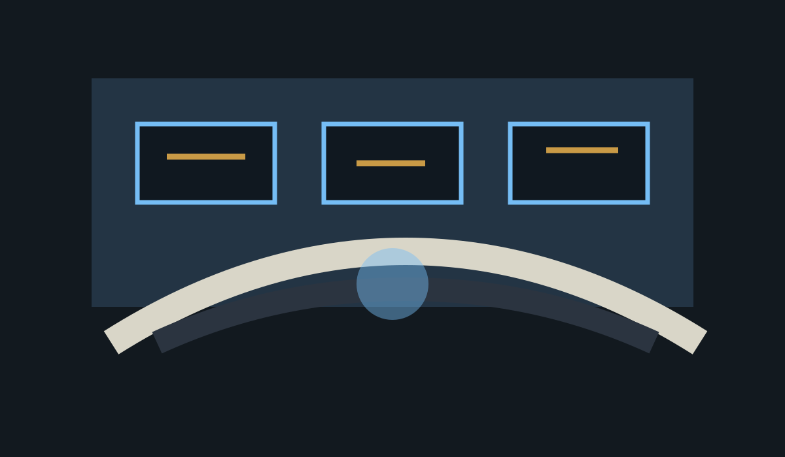
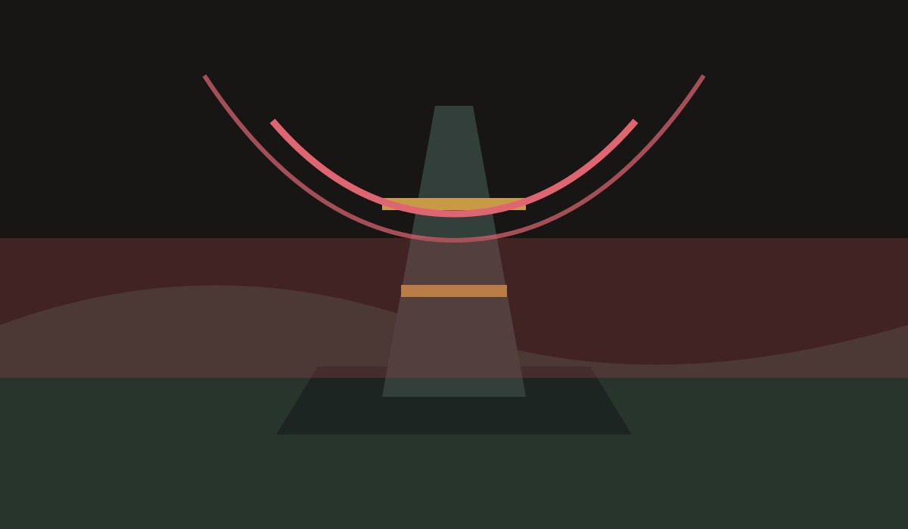

Realm Gateway
X-Men Apocalypse
B-24 was supposed to predict mutant escalation. Now Iceman is infected, New York is freezing, and every public rescue has become evidence in someone else's containment plan. The school is open under fragile public scrutiny. Writers can enter through school life, faction politics, rescue work, old loyalties, and the quiet cost of being seen. Two pressures are splitting the realm at once. B-24 is freezing New York while Genosha broadcasts sanctuary, leverage, and a warning no government can ignore.

Continue Writing
Rogue has work waiting
Signed-in members should resume play without turning the public gateway into a dashboard.
Active face
Rogue
Member in X-Men Apocalypse. Commitment controls use this face until changed.
Start Here
Read the board before you pick a door
Guidebook material should orient a visitor without sending them into a wall of threads.
Playable Now
The crisis has open scenes The realm has open doors The arcs have open scenes
Public preview should show story motion without exposing private queues, staff rooms, or active-face state. When no event is running, the gateway still needs atmosphere through standing tensions, places, and wanted pressure. When several events are live, the gateway should clarify each arc without making visitors decode a schedule.
Wanted Hooks
Open roles with story pressure
Wanted should feel like casting into play, not a static ad archive.
Locations
Choose where the next scene happens
One location can carry the hottest pressure while the rest stay clear doors into different kinds of play.

Xavier Institute The heart of the rebuilt school. Med Bay triage, new arrivals, and staff pressure converge here. 3 open scenes
New York City The crisis everyone can see. Frozen avenues, rescue routes, and cameras turn powers into evidence. event pressure
Mutant Underground The people between factions.
Trask / B-24 Facilities The machine room behind the winter.
United Nations Where fear becomes policy.
Genosha Sanctuary, threat, or both.First Writing Path
Know the fit before you apply
Applicants need atmosphere, story pressure, claims/reserves posture, and public rules before they commit.
Mock boundary: this V2 uses actual X-Men seed content and public-safe concepts, but the layout is a static design artifact. Public catalog slices, scene rows, wanted previews, and applicant/member continuation would need service-owned read models before implementation.